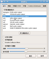

COSA活動記錄簿
留下COSA所辦活動之紀錄
首頁
相簿目錄
::
最新上傳
::
最新留言
::
熱門圖片
::
最高評分
熱門圖片
121 次觀看
121 次觀看
120 次觀看
120 次觀看
120 次觀看
119 次觀看
119 次觀看
119 次觀看

119 次觀看
119 次觀看
118 次觀看
118 次觀看
752 張圖片，共 63 頁
1
11
12
13
14
15
16
17
18
19
20
63


.jpg "檔案名稱=1 (36).jpg
檔案大小=77KB
圖片尺寸=800x600
加入日期=四月 24, 2007")